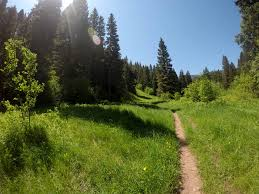

Green Canyon Loop
This 5-mile loop offers a gentle introduction to eco-hiking, with panoramic views and educational signposts about local flora.
This 5-mile loop offers a gentle introduction to eco-hiking, with panoramic views and educational signposts about local flora.
A refreshing 3-mile riverside trail perfect for families. Features shaded paths and a picnic area near the falls.
For more experienced hikers, this 8-mile climb rewards with breathtaking views and encounters with native wildlife.
| Trail Name | Length | Difficulty | Guide Available |
|---|---|---|---|
| Green Canyon Loop | 5 mi | Easy | Yes |
| River Mist Trail | 3 mi | Moderate | Yes |
| Summit Ridge Trek | 8 mi | Hard | Optional |